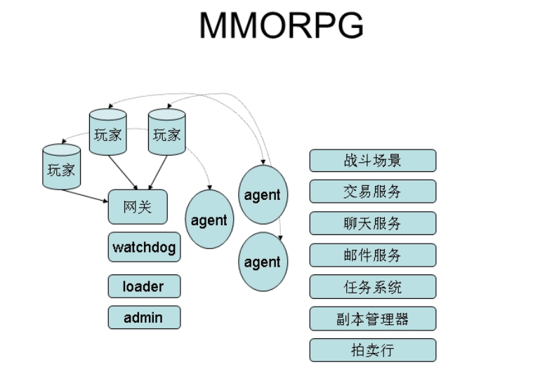
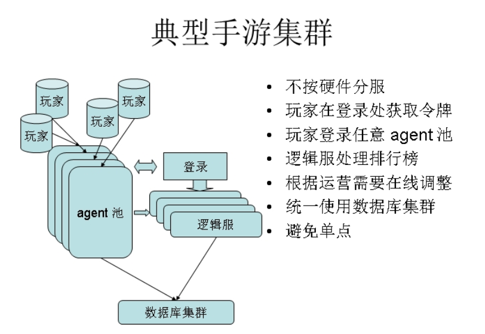

skynet: 基于 Actor 模式的开源框架
Skynet 是一个基于C跟lua的开源服务端并行框架， 作者：云风（ 简悦科技 云风）。
作者视频解说skynet： http://gad.qq.com/content/coursedetail?id=467
skynet设计综述： https://blog.codingnow.com/2012/09/the_design_of_skynet.html
先阅读完设计综述再看下面的内容。
Code Base
- 1000行C核心服务代码
- 1000行lua核心库
- 5000行lua外围库
- redis/mysql/mongodb driver
- crypt, sproto, sharedata, etc
消息调度模块
按照cpu的核心配置工作线程，actor的数量是远大于工作线程的数量的，一个actor向另一个actor发消息，actor拿到消息之后再去处理。
skynet维护一个全局的消息队列，每个消息队列里包含所有actor（含有待处理消息的actor），每个actor有自己的消息队列，所有的工作线程去消息队列里去拿到actor，再从actor里拿到消息再丢给actor去处理。线程会一直去拿消息处理，除非全局消息队列为空，线程才会休息。
异步编程
coroutine vs callback
callback：异常传播困难。
coroutine(协程)：有自己的调用栈，协程间切换由程序员控制，而线程间切换受系统控制。
--协程切换内存开发小，异常传播很容易。
--复用coroutine避免过频的GC(垃圾回收)
Actor 沙盒
actor 模式保证单独的actor出问题尽量把产生的影响变得最小。
传统模式下的理念是代码尽量不要出错，代码上线前多测试。
Actor模式是代码不可避免的会出错，出错尽量把出错的范围降到最小，不要影响到其他的服务。如果有严重的错误，可以从严重的错误里恢复起来。
通讯协议
进程内消息传递
通过文本协议序列化发送到其他的服务，收到消息的服务在反序列化回来。
- 文本协议(C服务)
- 自定义序列化库(Lua服务)
- 内存数据结构(自定义)
跨进程消息传递
通过现有的协议进行传递。
- 自定义协议
- 世面上的协议：sproto, google proto buffers, json, etc...
广播和组播
...
分布式解决方案
skynet支持两种分布式方案
-- harbor 模式用于扩展计算能力的不足
--cluster 模式提供弹性
--可以一起使用
如果没有必要，请在一台机器解决，使用cluster做弱关联
不做热更新，只做热修复
--A/B滚服, 定期维护，减少复杂度。
MMOPRG
MMORPG: Massive Muti-player Online RPG 多人在线RPG
魔兽 传奇 都是MMO
RPG:Role Playing Game角色扮演游戏

agent 玩家的代理，所有的玩家操作通过agent和其他的服务打交代，不需要交互的操作通过agent自己解决。
典型手游集群

调优和优化
- 内建性能分析模块
- Lua模块内建监控协议
- 替换CRT内存管理库(jemalloc)
- 进程内消息传递减少拷贝
- 优化向自身发送的消息
- 合并timer请求
- 高性能要求的服务使用C/C++编写(慎用)
- 为Lua线程C模块
- AOI
- 寻路
- 组播
- 公式计算
- 优化登陆，找到热点，避免单点